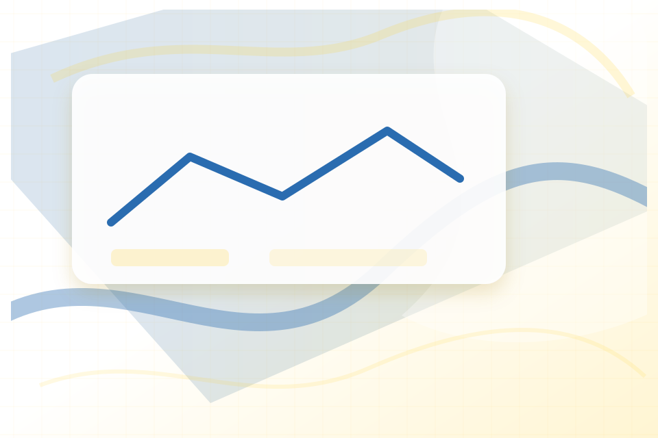
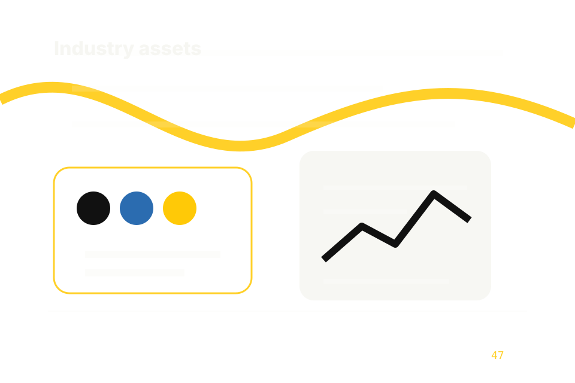

01
01Brand assets
assets/brand / charity: water direction / local to this site.
Local static asset system
Asset-System section 1 gives researching visitors a practical route into guides, checklists, and comparison material without leaving the site structure.
Asset categories
01assets/brand / charity: water direction / local to this site.
assets/brand / charity: water direction / local to this site.
assets/brand / charity: water direction / local to this site.

04assets/images/hero / charity: water direction / local to this site.
assets/video/posters / charity: water direction / local to this site.
assets/icons/ui / charity: water direction / local to this site.
assets/illustrations/diagrams / charity: water direction / local to this site.
assets/typography / charity: water direction / local to this site.
assets/css / charity: water direction / local to this site.
assets/js / charity: water direction / local to this site.
assets/animations / charity: water direction / local to this site.
assets/seo / charity: water direction / local to this site.
assets/og / charity: water direction / local to this site.
assets/social / charity: water direction / local to this site.
assets/header / charity: water direction / local to this site.
assets/footer / charity: water direction / local to this site.
assets/forms / charity: water direction / local to this site.
assets/analytics / charity: water direction / local to this site.
assets/cookies / charity: water direction / local to this site.
assets/accessibility / charity: water direction / local to this site.
assets/i18n / charity: water direction / local to this site.
assets/blog / charity: water direction / local to this site.
assets/services / charity: water direction / local to this site.

24assets/industry / charity: water direction / local to this site.
assets/case-studies / charity: water direction / local to this site.
assets/downloadables / charity: water direction / local to this site.
assets/legal / charity: water direction / local to this site.
assets/trust / charity: water direction / local to this site.
Site routes
Documentation
{kind=link}
{kind=link}
{kind=link}
{kind=link}
{kind=link}
{kind=link}
{kind=link}
{kind=link}
{kind=link}
{kind=link}
{kind=link}
{kind=link}
{kind=link}
{kind=link}
{kind=link}
{kind=link}
{kind=link}
{kind=link}
{kind=link}
{kind=link}
{kind=link}